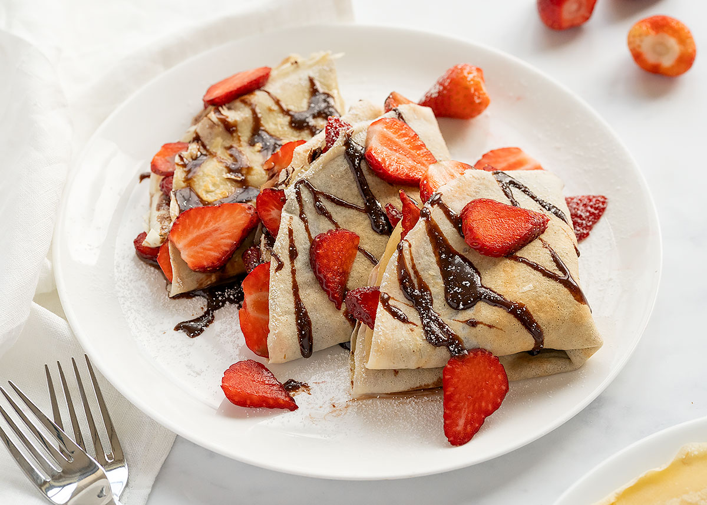
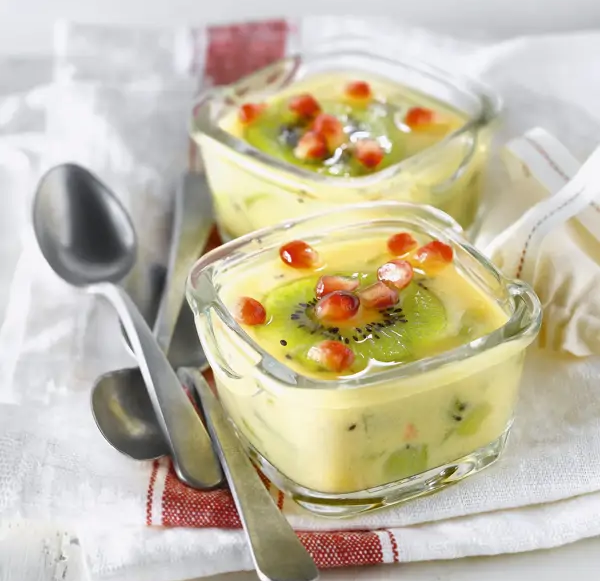
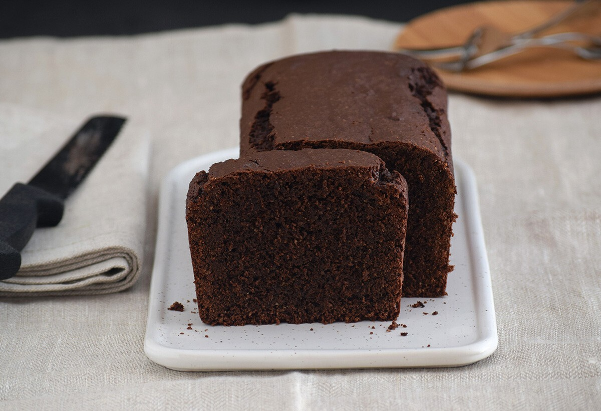
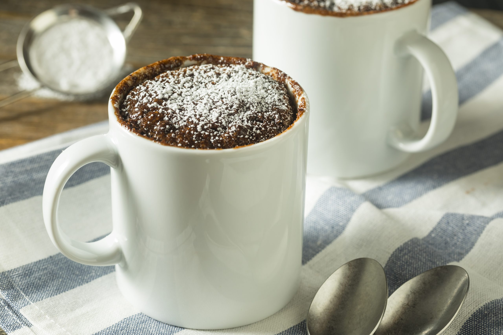

Creps de nutella
Estos crepes son la merienda perfecta para cualquier momento del día. Su masa fina y suave se combina con el sabor dulce y cremoso de la Nutella y la frescura de las fresas, creando un postre que siempre sorprende. Son fáciles de preparar, deliciosos y perfectos para compartir con amigos o disfrutar solo como un capricho dulce.
- 2 huevos
- 150 g de harina de trigo
- 1 cucharada de azúcar
- 250 ml de leche
- 200 ml de agua mineral
- 25 g de mantequilla derretida
- 1 pizca de sal
- Aceite de girasol o mantequilla para la sartén
Primero, batimos los huevos hasta que estén espumosos y los mezclamos con la leche. En otro bol, combinamos los ingredientes secos: harina, azúcar y sal, y los unimos con la mezcla de huevo y leche. Agregamos la mantequilla derretida y, si la masa queda muy espesa, un poco de agua hasta obtener una consistencia líquida pero ligera. Dejamos reposar la masa unos 30 minutos para que los crepes queden más finos y elásticos.
Mientras la masa reposa, lavamos las fresas, retiramos el tallo y las cortamos en trozos o láminas según prefiramos. Calentamos una sartén antiadherente con un poco de aceite o mantequilla y vertemos la masa con un cucharón, distribuyéndola en una capa fina. Cocinamos cada crepe durante 20–30 segundos por un lado y luego lo damos la vuelta hasta que esté dorado. Apilamos los crepes mientras cocinamos los demás para mantenerlos calientes.
Por último, calentamos un poco la Nutella en el microondas a baja potencia y untamos cada crepe con una cucharada generosa. Añadimos las fresas por encima y doblamos o enrollamos los crepes según prefiramos. ¡Y listo! Ya tenemos una merienda deliciosa, dulce y fresca que conquistará a todos.

Flan de frutas sin azúcar
Si buscas un postre ligero, delicioso y saludable, este flan de frutas es perfecto. Sin azúcar añadido y con el toque natural de la fruta, combina la suavidad del tofu con el frescor de la naranja, el kiwi y la granada, ofreciendo un flan cremoso y lleno de sabor que se prepara en pocos pasos y es ideal para cualquier momento del día.
- 2 cucharadas de agar-agar
- 100 ml de agua
- 2 naranjas
- 2 cucharadas de sirope de manzana
- 150 g de tofu
- 3 kiwis
- Granada (opcional)
Para empezar, disuelve el agar-agar en el agua hirviendo durante 5 minutos hasta que se haya mezclado completamente. A continuación, añade el zumo de las naranjas, el sirope de manzana y el tofu aplastado con un tenedor, mezclando bien para integrar todos los sabores. Vierte esta mezcla en vasitos individuales y reparte los kiwis cortados en rodajas, reservando algunas piezas para decorar encima. Deja reposar durante una hora para que el flan cuaje por completo y, si deseas, añade unas semillas de granada al momento de servir para darle un toque de color y frescura extra. ¡Listo! Un postre sano, refrescante y delicioso.

Bizcocho de chocolate fácil
Si eres amante del chocolate, este bizcocho te conquistará. Es esponjoso, jugoso y con un intenso sabor a chocolate que lo hace irresistible para cualquier ocasión. Perfecto para merendar, acompañar con café o incluso para sorprender en celebraciones, este bizcocho combina la suavidad de la mantequilla y la leche con el intenso sabor del cacao y el chocolate negro.
- 100 g de mantequilla
- 50 g de chocolate negro
- 40 g de cacao en polvo
- 3 huevos L
- 150 g de azúcar
- 60 ml de leche
- 5 ml de esencia de vainilla
- 100 g de harina de repostería
- 16 g de levadura química
- 2 g de sal
Comienza precalentando el horno a 180 ºC con calor arriba y abajo, y forra un molde rectangular de 22–25 cm con papel antiadherente. Trocea la mantequilla y el chocolate negro, y derrítelos juntos al baño maría o a fuego muy suave, removiendo hasta que la mezcla sea homogénea. Añade el cacao en polvo y mezcla bien con las varillas, dejando enfriar un poco.
En otro bol, bate los huevos con el azúcar durante varios minutos hasta que aumenten su volumen. Incorpora la leche y la esencia de vainilla, mezclando ligeramente. Luego, añade la mezcla de chocolate derretido, integrando suavemente todos los ingredientes con movimientos envolventes para no perder el aire incorporado. Vierte la mezcla en el molde preparado y hornea según las indicaciones para obtener un bizcocho esponjoso y delicioso, listo para disfrutar en cualquier momento.

Mug cake de chocolate
Si buscas un postre rápido, fácil y delicioso, este mug cake de chocolate es ideal. Con solo unos minutos y una taza, tendrás un bizcocho tierno y chocolatoso, perfecto para disfrutar calentito y darte un capricho dulce en cualquier momento del día. Puedes acompañarlo con helado o comerlo tal cual… ¡un verdadero placer en tiempo récord!
- 4 cucharadas rasas de harina leudante (o harina común + ½ cucharadita de polvo para hornear)
- 4 cucharadas rasas de azúcar
- 2 cucharadas de cacao en polvo
- 2 cucharadas de leche
- 2 cucharadas de aceite neutro (maíz o girasol)
- 1 huevo
- Azúcar impalpable para decorar
Para preparar este mug cake, primero mezcla en la taza los ingredientes secos: harina, cacao y azúcar, removiendo bien con un tenedor. Añade el huevo y bate hasta que no queden grumos, asegurándote de raspar los bordes de la taza. Luego incorpora la leche y el aceite, mezclando todo hasta obtener una masa homogénea, no demasiado líquida para evitar que se desborde en el microondas.
Coloca la taza en el borde de la bandeja giratoria del microondas y cocina según tu microondas: como referencia, 2 minutos a máxima potencia y 1 minuto 30 segundos a media potencia funcionan bien, aunque es recomendable probar y ajustar. Una vez listo, espolvorea con azúcar impalpable y disfruta calentito. Este mug cake es perfecto para comer solo o acompañado de un poco de helado de crema… ¡un placer rápido y chocolatoso que no falla!
